ヘッドウォータースのフィード
https://zenn.dev/p/headwaters
株式会社ヘッドウォータースのテックブログです。 AIエージェント、生成AI、LLM、Azureのサービスや資格、IoT、XR系などData&AIとApp modernizeに関して幅広く投稿します！
フィード
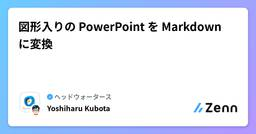
図形入りの PowerPoint を Markdown に変換
ヘッドウォータースのフィード
0. 元にした記事・リポジトリ日本マイクロソフトの Kazuki Ota さんによる図形フル活用の PowerPoint を GitHub Copilot に読ませてみたhttps://github.com/runceel/github-copilot-excel-labを自分の環境で実行してみたところ、動作させる際に詰まる点がいくつかあったので、備忘録として記載するまた、GitHub Copilot がどのような処理を行うことで曼荼羅のような複雑な図形を Mermaid に変換しているのかを確認する 1. 環境構築自分のローカルの WSL には dotnet の...
6時間前
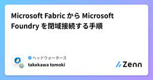
Microsoft Fabric から Microsoft Foundry を閉域接続する手順
ヘッドウォータースのフィード
執筆日2026/3/27 やることMicrosoft Fabric から Microsoft Foundry を閉域接続する方法をまとめます。 手順 1. Microsoft Fabricにマネージドプライベートを設定Microsoft Fabricで該当のワークスペースを開くワークスペースの設定をクリック送信ネットワーク>+作成をクリック以下の値を設定するマネージドプライベートエンドポイント名マネージドプライベートエンドポイントの名前を設定リソース識別子以下の値を設定/subscriptions/<サブスクリプションI...
10時間前
Zennの記事をLike順に並び替える
ヘッドウォータースのフィード
はじめにZennって、記事の並び替えができないのめちゃくちゃ不便じゃないですか？Like順に並び替える機能が実装されることを願っているのですが、待ちきれないので自分でやることにしました。（というか、AIに作ってもらいました。） 方法jsをブックマークレットにして、ユーザページ or Publicationページで実行するだけです。ブックマークレットについてはこちらの記事がわかりやすいです。勝手に引用させていただきすみません。Bookmarklet（ブックマークレット）を使おう Like順に並び替えるブックマークレットLike数順に記事を並び替えるブックマークレッ...
11時間前
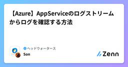
【Azure】AppServiceのログストリームからログを確認する方法
ヘッドウォータースのフィード
①AppService＞開発ツール＞高度なツールを選択 ②Kudu＞Log Streamを選択 ③ログが確認できる
1日前
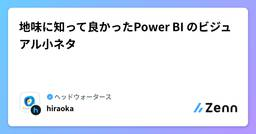
地味に知って良かったPower BI のビジュアル小ネタ
ヘッドウォータースのフィード
執筆日2026/03/27 概要地味に使えるなーと思ったビジュアルの小ネタを3つ紹介します。細かい説明は後半にまとめていますので、気になるものだけ拾い読みしてもらえれば大丈夫です。 記載する内容NO関数名活用例①ビジュアル間の相互作用を切る一部と全体を同時に比較したいとき例）特定の商品だけの状況を見たい、その上で、全商品の利益との比較もしたい②グラフをパラメーターで切り替え同じグラフのまま、分析の視点を変えたい時例）取引先の「国別」と「企業別」で、どれくらい販売しているかをそれぞれ確認したいけど、2つグラフを作るより一つで完結させ...
2日前
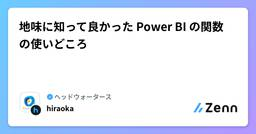
地味に知って良かった Power BI の関数の使いどころ
ヘッドウォータースのフィード
執筆日2026年3月27日 概要地味に使えるなーと思った関数を3つ紹介します。細かい説明は後半にまとめていますので、気になるものだけ拾い読みしてもらえれば大丈夫です。 記載する内容NO関数名活用例①TOPN上位5番目までのデータだけを見たい時例）利益額がTOP5の販売担当者情報だけ分析したい②REMOVEFILTERSフィルターの影響を受けて欲しくない時例）グラフ内で、「利益総額」と「担当者別利益額」を比較したい。③MAXX（を使った多数決）多数決で情報を定めたい時。例）製品に対しての製品カテゴリに表記揺れがあるが、多数...
2日前
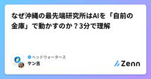
なぜ沖縄の最先端研究所はAIを「自前の金庫」で動かすのか？3分で理解
ヘッドウォータースのフィード
1. ざっくり言うと？（要約）沖縄科学技術大学院大学（OIST）が、機密性の高い研究データを外に出さずAIを本格活用できる「プライベートクラウド環境」を、キンドリルジャパンの支援で構築しました。計算が重い処理は自分たちのスパコン（HPC）で、AIの開発・検証はクラウド上でという「ハイブリッド構成」を採用し、最新技術を素早く取り入れられる体制を整えました。データをパブリッククラウドに預けることなく、初期投資を抑えながら短期間でAI活用をスタートできる点が最大の革新ポイントです。 2. もっと詳しく！（深掘り） 「データを外に出したくない」という切実な悩み研究機関や...
2日前
【VS Code】GitHub Copilotのサブエージェント(.agent.md)でモデル指定が無視される問題と最新動向 3
3
ヘッドウォータースのフィード
はじめにVS CodeのCopilot Chatで .agent.md を使ったカスタムエージェント、便利ですよね。特に runSubagent を使い、複数の専門エージェントをオーケストレーションする構成は、VS Code公式ドキュメントでも推奨ユースケースとして紹介されています。Subagents公式ドキュメントhttps://code.visualstudio.com/docs/copilot/agents/subagents一方で、実際に高度な構成を組んでみると、「サブエージェント側（.agent.md）で指定したモデルが無視され、親エージェントのモデルが...
2日前
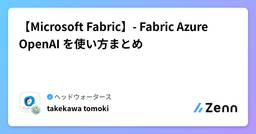
【Microsoft Fabric】- Fabric Azure OpenAI を使い方まとめ
ヘッドウォータースのフィード
執筆日2026/3/26 参考資料https://learn.microsoft.com/ja-jp/fabric/data-science/ai-services/how-to-use-openai-python-sdkhttps://learn.microsoft.com/ja-jp/fabric/admin/service-admin-portal-copilot 前提Fabric 容量：2FFabric リージョン：Janan East 手順Fabric Admin portalのTenant settingsでCopilotを有効にするNot...
3日前
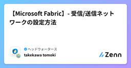
【Microsoft Fabric】- 受信/送信ネットワークの設定方法
ヘッドウォータースのフィード
執筆日2026/3/26 前提Fabric 容量：2FFabric リージョン：Janan East 手順Micrtosoft Fabricを開くワークスペースを作成するMicrosoft Fabric Admin portalを開くhttps://app.fabric.microsoft.com/admin-portal以下の2つを有効にするワークスペース レベルの受信ネットワーク規則を構成するワークスペース レベルの送信ネットワーク規則を構成する5. ワークスペースの設定をクリックする送信ネットワーク受信ネットワーク
3日前
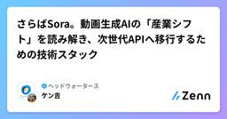
さらばSora。動画生成AIの「産業シフト」を読み解き、次世代APIへ移行するための技術スタック
ヘッドウォータースのフィード
2026年3月24日、OpenAIは動画生成AI「Sora」の提供終了を発表しました。驚いた人も多いと思います。しかし、冷静に状況を整理すると、これは突然の出来事ではなく、AIビジネスの構造的な変化が表面に出てきただけです。この記事では「なぜSoraが終わったのか」という背景から、「明日から何を使えばいいのか」という実装レベルの話まで、初心者エンジニアが実務で迷わないよう順番に解説します。 1. なぜSoraは終わったのか？——3つの構造的な理由「急に終わった」と感じるかもしれませんが、実は3つの問題が積み重なっていました。 ① コストが収益を上回り続けたSoraの1日...
3日前
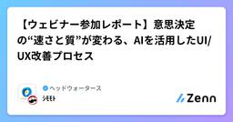
【ウェビナー参加レポート】意思決定の“速さと質”が変わる、AIを活用したUI/UX改善プロセス
ヘッドウォータースのフィード
2025年末にGoodpatchさん主催の「AI×UXデザイン ─ 意思決定の“速さと質”が変わる、AIを活用したUI/UX改善プロセス」が開催されました。今回はウェビナーに参加してみて、HeadwawtersのUI/UXデザイナーが実際の案件で、どう活かせるのか、何ができるのかをまとめました。 はじめに生成AI×デザインツールの普及により、アイデアを瞬時に形にできる時代になりました。LayermateをはじめとするAIツールを使えば、数分でデザインのプロトタイプを生成できます。しかし、「速く作れること」と「良いデザインを作れること」は全く別の問題です。 速く作れるの...
3日前
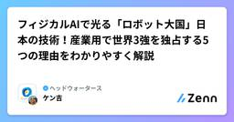
フィジカルAIで光る「ロボット大国」日本の技術！産業用で世界3強を独占する5つの理由をわかりやすく解説
ヘッドウォータースのフィード
1. ざっくり言うと？（要約）AIがついに「画面の外」に飛び出し、ロボットの身体を手に入れた。これが「フィジカルAI」です。産業用ロボット「世界4強」のうち、ファナック・安川電機に加え、ソフトバンクグループが2025年10月にスイスのABBのロボット事業買収を発表したことで、実に3社が日系資本となり、日本企業の存在感が一気に高まっています。キーエンスの3Dセンサーや、ハーモニック・ドライブ・システムズの精密制御技術など、「ロボットの手先」を担う日本固有の技術が、フィジカルAI時代の核心として世界から注目されています。 2. もっと詳しく！（深掘り） フィジカルAI...
4日前
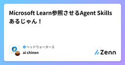
Microsoft Learn参照させるAgent Skillsあるじゃん！ 4
ヘッドウォータースのフィード
はじめに周りの方の業務におけるAI活用がすごい…！ヘッドウォータース初参画のプロジェクトで最初に感じた事です開発経験やAzureの知識が浅い事に不安を感じてましたが、そもそも業務、開発を進める上でのAI活用でも遅れてました😭なので、今回はAgent Skillsについて調べてみたのでまとめようと思います！ Agent SkillsとはAgent Skillsとは、コーディングエージェントに特定の能力や知識、手順を持たせるための仕組みです。エージェントが実行できるタスクをモジュールとして定義し、必要なときに読み込んで利用できるようにすることで、より安定した動作と高い再利...
4日前
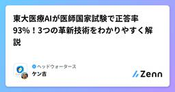
東大医療AIが医師国家試験で正答率93%！3つの革新技術をわかりやすく解説
ヘッドウォータースのフィード
1. ざっくり言うと？（要約）東京大学が日本語の医療知識に特化したAI（LLM）を開発し、2025年医師国家試験で正答率93.3％を達成しました。OpenAIの「GPT-4o」や「o1」を超える性能で、日本の医療制度にも精通しているのが強みです。電子カルテの自動整理や治験患者の探索など、医療現場の"裏方業務"を大幅に効率化できる可能性を秘めています。 2. もっと詳しく！（深掘り） 医師国家試験で93.3％って、どのくらいすごいの？医師国家試験は、医学部6年間の知識を総動員して挑む難関試験です。合格率はおよそ90〜92％前後ですが、それは医学部で6年間みっちり学...
5日前
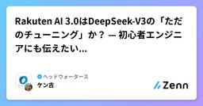
Rakuten AI 3.0はDeepSeek-V3の「ただのチューニング」か？ — 初心者エンジニアにも伝えたい技術的な真実 1
ヘッドウォータースのフィード
はじめに：「config.jsonにdeepseek_v3と書いてある」問題2026年3月、楽天グループが国内最大規模の大規模言語モデル「Rakuten AI 3.0」を一般公開しました。自分はこの発表を受け、以前にRakuten AI 3.0を紹介する記事を書きました。https://zenn.dev/headwaters/articles/73d0d74cf9a752その記事では「日本語の理解力でGPT-4oを上回った」「Apache 2.0ライセンスで誰でも無償で使える」という点を中心にまとめました。しかし発表から数時間以内で技術コミュニティでは静かなざわめきが起き...
6日前
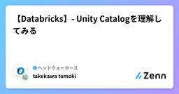
【Databricks】- Unity Catalogを理解してみる
ヘッドウォータースのフィード
執筆日2026/3/22 前提DataBricksを勉強始めて1週間の素人です。間違いがあれば指摘お願いしますmm Unity Catalogとは？Databricks全体のデータ管理レイヤーである。ワークスペース単体で管理するのではなく「アカウント全体」でデータを統制できるhttps://docs.databricks.com/aws/ja/data-governance/unity-catalog Unity Catalogの全体構造 各レイヤーの役割 MetastoreUnity Catalogの最上位レイヤーすべてのCatalog・...
6日前
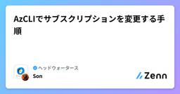
AzCLIでサブスクリプションを変更する手順
ヘッドウォータースのフィード
記事の内容AzCLIからサブスクリプションを変更する手順とコマンドを記述します。 前提以下を想定しています。Azure CLI がインストール済みである対象テナントにアクセス権がある切り替え先のサブスクリプションにアクセスできる 一連の流れ# 1. 指定テナントにログインaz login --tenant <tenantID># 2. 現在のサブスクリプションを確認az account show# 3. 利用可能なサブスクリプション一覧を確認az account list -o table# 4. 対象サブスクリプションへ切り替え...
6日前
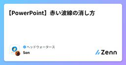
【PowerPoint】赤い波線の消し方
ヘッドウォータースのフィード
記事の内容PowerPointで作業していると、下記画像のように赤い波線が出ることがあります。これはPowerPointがスペルチェックを自動的に行い、問題があると赤い波線を出してくれるものです。この記事では赤い波線の消し方について記述します。 方法①：一単語分の波線だけ消す対象の波線部で右クリックを行い、「全て無視」または「辞書に追加」を選択すると波線が消える。 方法②：PowerPointの設定から「スペルチェックを外す」[ファイル] > [オプション] > [文章校正] で入力時にスペルチェックを行うのチェックを外すと波線が消える。 ファイ...
6日前
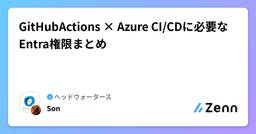
GitHubActions × Azure CI/CDに必要なEntra権限まとめ
ヘッドウォータースのフィード
記事の内容GitHubActionsからAzure（例：Azure Container Registry）へCI/CDを行う場合、Azure側で「外部アプリケーションの登録」が必要になります。その際に必要となるのが Microsoft Entra IDの権限 です。本記事では、必要な権限とその理由を整理します。 必要なEntra権限GitHubActionsからAzureにデプロイするためには、以下の権限が必要です。アプリケーション管理者（Application Administrator）ディレクトリ閲覧者（Directory Readers） なぜこ...
6日前